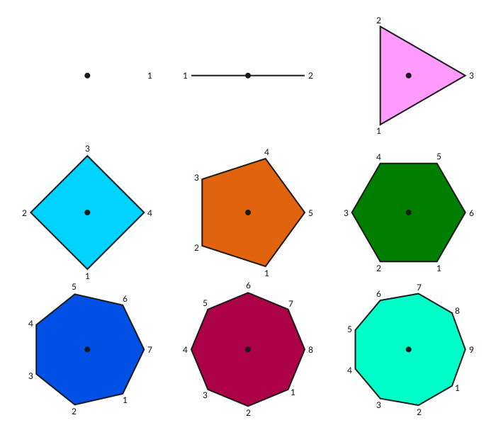
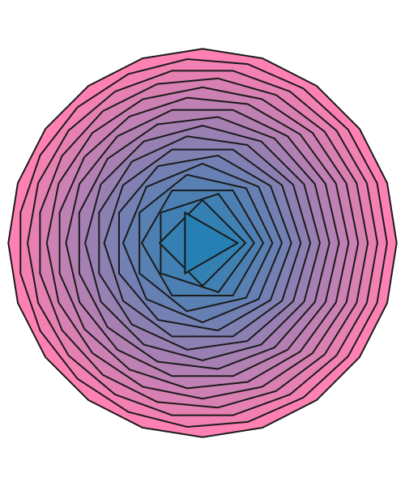
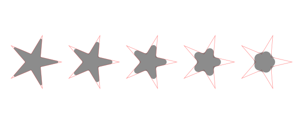
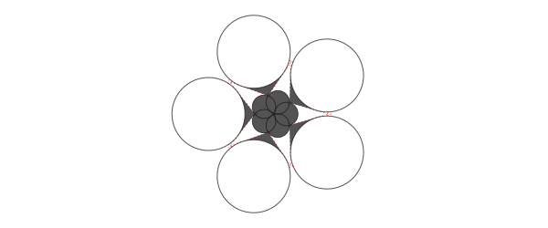
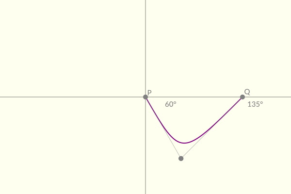

Polygons and paths
For drawing shapes, Luxor provides polygons and paths.
A polygon is an ordered collection of Points stored in an array. To draw a polygon, you can use the poly() function, which converts the points to a path.
A path is a sequence of one or more straight and curved (circular arc or Bézier curve) segments. Paths can consist of subpaths. Luxor maintains a 'current path', to which you can add lines and curves until you finish with a stroke or fill instruction.
You can store a path in a Path type, which contains path elements.
Luxor also provides a BezierPath type, which is an array of four-point tuples, each of which is a Bézier cubic curve section.
Regular polygons ("ngons")
A polygon is an array of points. The points can be joined with straight lines.
You can make regular polygons — from triangles, pentagons, hexagons, septagons, heptagons, octagons, nonagons, decagons, and on-and-on-agons — with ngon.
cols = distinguishable_colors(10)
setline(2)
fontsize(12)
tiles = Tiler(700, 600, 3, 3)
for (pos, n) in tiles
@layer begin
translate(pos)
p = ngon(Point(0, 0), 80, n, vertices=true)
sethue(cols[n])
poly(p, action = :fill, close=true)
sethue("grey10")
poly(p, action = :stroke, close=true)
circle(Point(0, 0), 4, action = :fill)
label.([string(i) for i in 1:n], slope.(O, p), p, offset=5)
end
endThe initial orientation of the polygon defaults to 0.

If you want to specify the side length rather than the circumradius, use ngonside.
for i in 20:-1:3
sethue(i/20, 0.5, 0.7)
ngonside(Point(0, 0), 75, i, 0, action = :fill)
sethue("grey10")
ngonside(Point(0, 0), 75, i, 0, action = :stroke)
end
The functions return the vertices, or you can use the vertices=true option.
ngon(Point(0, 0), 10, 5) Point(3.0901699437494745, 9.510565162951535)
Point(-8.090169943749473, 5.877852522924733)
Point(-8.090169943749475, -5.87785252292473)
Point(3.0901699437494723, -9.510565162951536)
Point(10.0, -2.4492935982947065e-15)Polygons
Use poly to draw lines connecting the points and/or just fill the area:
tiles = Tiler(600, 250, 1, 2, margin=20)
tile1, tile2 = collect(tiles)
randompoints = [Point(rand(-100:100), rand(-100:100)) for i in 1:10]
gsave()
translate(tile1[1])
poly(randompoints, action = :stroke)
grestore()
gsave()
translate(tile2[1])
poly(randompoints, action = :fill)
grestore()
Holes
To form a hole in a polygon, you reverse the direction of the hole compared to the outer shape. When converted to paths (which happens as part of the drawing process), the reversed polygon forms a hole when drawn.
In this example, the first nut is made by reversing the list of points, the second by using the keyword argument when constructing the shape, and the third when drawing the polygon as a path.
# nut 1
translate(-100, 0)
nut = ngon(O, 120, 6, vertices=true)
hole = reverse(ngon(O, 70, 6, vertices=true))
poly.((nut, hole), action = :path)
fillpath()
# nut 2
translate(100, 0)
sethue("purple")
nut = ngon(O, 120, 6, vertices=true)
hole = ngon(O, 70, 6, reversepath=true, vertices=true)
poly(nut, action = :path)
poly(hole, action = :path)
fillpath()
# nut 3
translate(100, 0)
sethue("orange")
nut = ngon(O, 120, 6, vertices=true)
hole = ngon(O, 70, 6, vertices=true)
poly(nut, action = :path)
newsubpath()
poly(hole, reversepath=true, action = :path)
fillpath();fill-opacity:1;stroke:none;"/>
<path style=" stroke:none;fill-rule:nonzero;fill:rgb(0%25,0%25,0%25);fill-opacity:1;" d="M 260 253.921875 L 140 253.921875 L 80 150 L 140 46.078125 L 260 46.078125 L 320 150 M 270 150 L 235 89.378906 L 165 89.378906 L 130 150 L 165 210.621094 L 235 210.621094 "/>
<path style=" stroke:none;fill-rule:nonzero;fill:rgb(50.196078%25,0%25,50.196078%25);fill-opacity:1;" d="M 360 253.921875 L 240 253.921875 L 180 150 L 240 46.078125 L 360 46.078125 L 420 150 M 370 150 L 335 89.378906 L 265 89.378906 L 230 150 L 265 210.621094 L 335 210.621094 "/>
<path style=" stroke:none;fill-rule:nonzero;fill:rgb(100%25,64.705882%25,0%25);fill-opacity:1;" d="M 460 253.921875 L 340 253.921875 L 280 150 L 340 46.078125 L 460 46.078125 L 520 150 M 470 150 L 435 89.378906 L 365 89.378906 L 330 150 L 365 210.621094 L 435 210.621094 "/>
</g>
</svg>)
Fill rule
You can have more control over the hole business by using the setfillrule() function. This allows you to set the fill rule for subpaths to either :winding or :even_odd. The fill rule is used to select how paths that contain subpaths are filled. The default rule (which determines the behaviour we usually see for the current drawing) is :winding.
See the wikipedia entry for Even–odd_rule for more details.
In the following example, the default :winding rule is shown in cyan, on the left, and the reverse flag controls whether the subpath is reversed or not. Without it, the boxes would just be drawn on top of each other and you'd just see a big cyan box.
The :even_odd rule is shown in operation in magenta, on the right. The results are the same, but the code can be simpler, because reverse-ing every other subpath is not required.
fontsize(69)
panes = Tiler(800, 400, 1, 2)
setfillrule(:winding)
sethue("cyan")
@layer begin
translate(first(panes[1]))
let
reverse = false
for s in 300:-20:30
box(O, s, s, reversepath=reverse, :path)
reverse = !reverse
end
end
fillpath()
end
setfillrule(:even_odd)
sethue("magenta")
@layer begin
translate(first(panes[2]))
for s in 300:-20:30
box(O, s, s, :path)
end
fillpath()
end;fill-opacity:1;" d="M 55 350 L 55 50 L 355 50 L 355 350 Z M 65 340 L 345 340 L 345 60 L 65 60 Z M 75 330 L 75 70 L 335 70 L 335 330 Z M 85 320 L 325 320 L 325 80 L 85 80 Z M 95 310 L 95 90 L 315 90 L 315 310 Z M 105 300 L 305 300 L 305 100 L 105 100 Z M 115 290 L 115 110 L 295 110 L 295 290 Z M 125 280 L 285 280 L 285 120 L 125 120 Z M 135 270 L 135 130 L 275 130 L 275 270 Z M 145 260 L 265 260 L 265 140 L 145 140 Z M 155 250 L 155 150 L 255 150 L 255 250 Z M 165 240 L 245 240 L 245 160 L 165 160 Z M 175 230 L 175 170 L 235 170 L 235 230 Z M 185 220 L 225 220 L 225 180 L 185 180 Z M 185 220 "/>
<path style=" stroke:none;fill-rule:evenodd;fill:rgb(100%25,0%25,100%25);fill-opacity:1;" d="M 445 350 L 445 50 L 745 50 L 745 350 Z M 455 340 L 455 60 L 735 60 L 735 340 Z M 465 330 L 465 70 L 725 70 L 725 330 Z M 475 320 L 475 80 L 715 80 L 715 320 Z M 485 310 L 485 90 L 705 90 L 705 310 Z M 495 300 L 495 100 L 695 100 L 695 300 Z M 505 290 L 505 110 L 685 110 L 685 290 Z M 515 280 L 515 120 L 675 120 L 675 280 Z M 525 270 L 525 130 L 665 130 L 665 270 Z M 535 260 L 535 140 L 655 140 L 655 260 Z M 545 250 L 545 150 L 645 150 L 645 250 Z M 555 240 L 555 160 L 635 160 L 635 240 Z M 565 230 L 565 170 L 625 170 L 625 230 Z M 575 220 L 575 180 L 615 180 L 615 220 Z M 575 220 "/>
</g>
</svg>)
Pretty polygons
The prettypoly function can place graphics at each vertex of a polygon. After the polygon action, the supplied vertexfunction function is evaluated at each vertex. For example, to mark each vertex of a polygon with a randomly-colored circle:
apoly = star(O, 70, 7, 0.6, 0, vertices=true)
prettypoly(apoly, action=:fill, () ->
begin
randomhue()
circle(O, 10, action=:fill)
end,
close=true)
An optional keyword argument vertexlabels lets you pass a function that can number each vertex. The function can use two arguments, the current vertex number, and the total number of points in the polygon:
apoly = star(O, 80, 5, 0.6, 0, vertices=true)
prettypoly(apoly,
:stroke,
vertexlabels = (n, l) -> (text(string(n, " of ", l), halign=:center)),
close=true)
Recursive decoration is possible:
decorate(pos, p, level) = begin
if level < 4
randomhue()
scale(0.25, 0.25)
prettypoly(p, action = :fill, () -> decorate(pos, p, level+1), close=true)
end
end
apoly = star(O, 100, 7, 0.6, 0, vertices=true)
prettypoly(apoly, action = :fill, () -> decorate(O, apoly, 1), close=true)
Polygons can be simplified using the Douglas-Peucker algorithm (non-recursive version), via simplify.
sincurve = [Point(6x, 80sin(x)) for x in -5π:π/20:5π]
prettypoly(collect(sincurve), action = :stroke,
() -> begin
sethue("red")
circle(O, 3, action = :fill)
end)
text(string("number of points: ", length(collect(sincurve))), 0, 100)
translate(0, 200)
simplercurve = simplify(collect(sincurve), 0.5)
prettypoly(simplercurve, action = :stroke,
() -> begin
sethue("red")
circle(O, 3, action = :fill)
end)
text(string("number of points: ", length(simplercurve)), 0, 100)
Quickly changing polygons
If you want to quickly and permanently modify a polygon, there's polymove!, polyscale!, polyreflect!, and polyrotate!.
shape = star(O, 10, 5, 0.5, 0, vertices=true)
circle(O, 3, action = :stroke)
polymove!(shape, O, O + (0, 50))
poly(shape, action = :stroke, close=true)
for i in 1:20
poly(polyrotate!(shape, π/5), action = :fill, close=true)
polyscale!(shape, 19//18)
endThe polygon is continually modified (notice the ! in the function names).

pgon = randompointarray(BoundingBox()/2 ..., 10)
polymove!(pgon, O, Point(-80, 0))
poly(pgon, action = :fill, close=true)
# reflect in y axis:
polyreflect!(pgon, Point(0, 0), Point(0, 100))
sethue("blue")
poly(pgon, action = :fill, close=true)
Other functions
There are a number of experimental polygon functions. These won't work well for polygons that aren't simple or where the sides intersect each other, but they sometimes do a reasonable job. For example, here's polysplit:
s = squircle(O, 60, 60, vertices=true)
pt1 = Point(0, -120)
pt2 = Point(0, 120)
line(pt1, pt2, action = :stroke)
poly1, poly2 = polysplit(s, pt1, pt2)
randomhue()
poly(poly1, action = :fill)
randomhue()
poly(poly2, action = :fill)
Smoothing polygons
Because polygons can have sharp corners, the experimental polysmooth function attempts to insert arcs at the corners and draw the result.
The original polygon is shown in red; the smoothed polygon is shown on top:
tiles = Tiler(600, 250, 1, 5, margin=10)
for (pos, n) in tiles
p = star(pos, tiles.tilewidth/2 - 2, 5, 0.3, 0, vertices=true)
sethue("red")
poly(p, close=true, action = :stroke)
sethue("grey10")
polysmooth(p, n * 2, action = :fill)
end
The final polygon shows that you can get unexpected results if you attempt to smooth corners by more than the possible amount. The debug=true option draws the circles if you want to find out what's going wrong, or if you want to explore the effect in more detail.
p = star(O, 60, 5, 0.35, 0, vertices=true)
setdash("dot")
sethue("red")
prettypoly(p, close=true, action = :stroke)
setdash("solid")
sethue("grey10")
polysmooth(p, 40, action = :fill, debug=true)
Offsetting polygons
There are three methods for offsetpoly, a function which constructs a new polygon that's offset from an existing one.
offsetpoly(plist, d)treats theplistof points as a polygon withnvertices joined bynlines with offsetdon both sides.offsetpoly(plist, startoffset=d1, endoffset=d2)treats theplistof points as a polyline withnvertices joined byn-1lines, where the offset varies fromstartoffsettoendoffset.offsetpoly(plist, f::function)applies a function f at each vertex of the polyline to determine the width of the offset polygon at that point.
The first method is good for making closed shapes larger or smaller. The other methods are useful for building shapes around an open linear spine.
1: n vertices joined by n lines
The offsetpoly(plist, d) method constructs a closed polygon outside or inside an existing polygon, at distance d. The last vertex in plist as assumed to be be connected to the first.
In the following example, the dotted red polygon is the original, the black polygons have positive offsets and surround the original, the cyan polygons have negative offsets and run inside the original. Use poly to draw the result.
p = star(O, 45, 5, 0.5, 0, vertices=true)
sethue("red")
setdash("dot")
poly(p, action = :stroke, close=true)
setdash("solid")
sethue("black")
poly(offsetpoly(p, 20), action = :stroke, close=true)
poly(offsetpoly(p, 25), action = :stroke, close=true)
poly(offsetpoly(p, 30), action = :stroke, close=true)
poly(offsetpoly(p, 35), action = :stroke, close=true)
sethue("darkcyan")
poly(offsetpoly(p, -10), action = :stroke, close=true)
poly(offsetpoly(p, -15), action = :stroke, close=true)
poly(offsetpoly(p, -20), action = :stroke, close=true)
The function is intended for simple cases, and it can go wrong if pushed too far. Sometimes the offset distances can be larger than the polygon segments, and things will start to go wrong. In this example, the offset goes so far negative that the polygon overshoots the origin, becomes inverted and starts getting larger again.

2 n vertices joined by n-1 lines
The offsetpoly(plist) method constructs a polygon around a line joining the lines in plist. At the start of the line, the polygon will be startoffset units on each side; by the end of the line, the polygon will be endoffset units on each side. The last vertex isn't joined to the first, hence n-1.
In the following example, the original spine is drawn in orange, on top of the black polygon that's constructed to be offset 2 units on each side at the start and 30 units on each side at the end.
spine = [Point(20 + 40x, 15sin(2x)) for x in 0:.1:4π]
for θ in range(0, 2π, step=π/12)
@layer begin
sethue("black")
rotate(θ)
poly(offsetpoly(spine, startoffset=1, endoffset=30), action = :fill)
sethue("orange")
poly(spine, action = :stroke)
end
end
Using an offset-control function
This method accepts a keyword argument that allows you to control the way the offsets are applied, using the easing functionality built in to Luxor (see Animation helper functions).
By default the function is lineartween, so the offset changes linearly between the startoffset and the endoffset values. With other easing functions, this change is modulated. For example, the easeinoutquad function moves between start and end values using a quadratic motion.
spine = between.(O - (200, 0), O + (200, 0), 0:0.025:1)
sethue("red")
prettypoly(spine, action = :stroke)
sethue("black")
pg = offsetpoly(spine, startoffset=0, endoffset=200, easingfunction=easeinoutquad)
prettypoly(pg, action = :stroke, close=true)
But in the next example, the function f(t, b, c, d) (the Luxor standard four-argument easing function) is defined to run from 0 to 2 and back again as t goes from 0 to 1, so the initial and final offsets are 'eased' to 0, and at the middle of the polygon the offsets at that location are 'eased' to 2 × the offset value at that point.
spine = [Point(20x, 15sin(x)) for x in -4π:pi/24:4pi]
f(t, b, c, d) = 2sin(t * π)
pg = offsetpoly(spine, startoffset=1, endoffset=10, easingfunction=f)
sethue("black")
poly(pg, action = :fill)
sethue("white")
poly(spine, action = :stroke)
3: Applying a function
This method generates offset widths using the supplied function. The value of the supplied function f at f(0, θ) determines the start offset on each side, and f(1, θ) determines the finishing offset on each side. The width at the middle vertex will be f(0.5, θ) (on each side). θ is provided as the current slope of the polyline at that point.
This example uses a simple sine curve in f() to vary the width of the spiral from beginning to end.
f(x, θ) = 10 + 40sin(x * π)
@drawsvg begin # hide
spine = spiral(30, 1.3, vertices=true)
ps = polysample(spine, 250, include_first=true, closed=false)
pgon = offsetpoly(ps, f)
poly(pgon, action = :stroke)
setmesh(mesh(box(BoundingBox(pgon)),
[
RGB(Luxor.julia_red...),
RGB(Luxor.julia_blue...),
RGB(Luxor.julia_green...),
RGB(Luxor.julia_purple...),
]))
poly(pgon, action = :fill)Fitting splines
The experimental polyfit function constructs a B-spline that follows the points approximately.
pts = [Point(x, rand(-100:100)) for x in -280:30:280]
setopacity(0.7)
sethue("red")
prettypoly(pts, () -> circle(O, 5, action = :fill))
sethue("darkmagenta")
poly(polyfit(pts, 200), action = :stroke)
Converting paths to polygons
You can convert the current path to an array of polygons, using pathtopoly.
In the next example, the path consists of a number of paths, some of which are subpaths, which form the holes.
textpath("get polygons from paths")
plist = pathtopoly()
for (n, pgon) in enumerate(plist)
randomhue()
prettypoly(pgon, action = :stroke, close=true)
gsave()
translate(0, 100)
poly(polysortbyangle(pgon, polycentroid(pgon)), action = :stroke, close=true)
grestore()
end
The pathtopoly function calls getpathflat to convert the current path to an array of polygons, with each curved section flattened to line segments.
The getpath function gets the current path as an array of elements, lines, and unflattened curves.
Bezigons
A bezigon is like a polygon, but the sides can be Bézier paths instead of straight lines. Supply the corners and sides to the bezigon function.
corners = [Point(10, 0), Point(200, 0)]
sides = [
[Point(70, -40), Point(150, -50)],
[Point(150, 50), Point(70, 40)],
]
for i in 1:10
sethue(HSV(36i, .7, .7))
rotate(2π / 10)
bezigon(corners, sides, :fill)
end
sethue("white")
circle.([corners..., sides[1]..., sides[2]...], 7, :fill);fill-opacity:1;stroke:none;"/>
<path style=" stroke:none;fill-rule:nonzero;fill:rgb(70%25,50.4%25,21%25);fill-opacity:1;" d="M 308.089844 205.878906 C 380.144531 208.785156 450.742188 247.71875 461.804688 317.558594 C 391.964844 328.617188 333.121094 273.503906 308.089844 205.878906 "/>
<path style=" stroke:none;fill-rule:nonzero;fill:rgb(60.2%25,70%25,21%25);fill-opacity:1;" d="M 303.089844 209.511719 C 359.671875 254.214844 393.90625 327.207031 361.804688 390.210938 C 298.800781 358.109375 283.589844 278.933594 303.089844 209.511719 "/>
<path style=" stroke:none;fill-rule:nonzero;fill:rgb(30.8%25,70%25,21%25);fill-opacity:1;" d="M 296.910156 209.511719 C 316.410156 278.933594 301.199219 358.109375 238.195312 390.210938 C 206.09375 327.207031 240.328125 254.214844 296.910156 209.511719 "/>
<path style=" stroke:none;fill-rule:nonzero;fill:rgb(21%25,70%25,40.6%25);fill-opacity:1;" d="M 291.910156 205.878906 C 266.878906 273.503906 208.035156 328.617188 138.195312 317.558594 C 149.257812 247.71875 219.855469 208.785156 291.910156 205.878906 "/>
<path style=" stroke:none;fill-rule:nonzero;fill:rgb(21%25,70%25,70%25);fill-opacity:1;" d="M 290 200 C 230 240 150 250 100 200 C 150 150 230 160 290 200 "/>
<path style=" stroke:none;fill-rule:nonzero;fill:rgb(21%25,40.6%25,70%25);fill-opacity:1;" d="M 291.910156 194.121094 C 219.855469 191.214844 149.257812 152.28125 138.195312 82.441406 C 208.035156 71.382812 266.878906 126.496094 291.910156 194.121094 "/>
<path style=" stroke:none;fill-rule:nonzero;fill:rgb(30.8%25,21%25,70%25);fill-opacity:1;" d="M 296.910156 190.488281 C 240.328125 145.785156 206.09375 72.792969 238.195312 9.789062 C 301.199219 41.890625 316.410156 121.066406 296.910156 190.488281 "/>
<path style=" stroke:none;fill-rule:nonzero;fill:rgb(60.2%25,21%25,70%25);fill-opacity:1;" d="M 303.089844 190.488281 C 283.589844 121.066406 298.800781 41.890625 361.804688 9.789062 C 393.90625 72.792969 359.671875 145.785156 303.089844 190.488281 "/>
<path style=" stroke:none;fill-rule:nonzero;fill:rgb(70%25,21%25,50.4%25);fill-opacity:1;" d="M 308.089844 194.121094 C 333.121094 126.496094 391.964844 71.382812 461.804688 82.441406 C 450.742188 152.28125 380.144531 191.214844 308.089844 194.121094 "/>
<path style=" stroke:none;fill-rule:nonzero;fill:rgb(70%25,21%25,21%25);fill-opacity:1;" d="M 310 200 C 370 160 450 150 500 200 C 450 250 370 240 310 200 "/>
<path style=" stroke:none;fill-rule:nonzero;fill:rgb(100%25,100%25,100%25);fill-opacity:1;" d="M 317 200 C 317 203.867188 313.867188 207 310 207 C 306.132812 207 303 203.867188 303 200 C 303 196.132812 306.132812 193 310 193 C 313.867188 193 317 196.132812 317 200 Z M 317 200 "/>
<path style=" stroke:none;fill-rule:nonzero;fill:rgb(100%25,100%25,100%25);fill-opacity:1;" d="M 507 200 C 507 203.867188 503.867188 207 500 207 C 496.132812 207 493 203.867188 493 200 C 493 196.132812 496.132812 193 500 193 C 503.867188 193 507 196.132812 507 200 Z M 507 200 "/>
<path style=" stroke:none;fill-rule:nonzero;fill:rgb(100%25,100%25,100%25);fill-opacity:1;" d="M 377 160 C 377 163.867188 373.867188 167 370 167 C 366.132812 167 363 163.867188 363 160 C 363 156.132812 366.132812 153 370 153 C 373.867188 153 377 156.132812 377 160 Z M 377 160 "/>
<path style=" stroke:none;fill-rule:nonzero;fill:rgb(100%25,100%25,100%25);fill-opacity:1;" d="M 457 150 C 457 153.867188 453.867188 157 450 157 C 446.132812 157 443 153.867188 443 150 C 443 146.132812 446.132812 143 450 143 C 453.867188 143 457 146.132812 457 150 Z M 457 150 "/>
<path style=" stroke:none;fill-rule:nonzero;fill:rgb(100%25,100%25,100%25);fill-opacity:1;" d="M 457 250 C 457 253.867188 453.867188 257 450 257 C 446.132812 257 443 253.867188 443 250 C 443 246.132812 446.132812 243 450 243 C 453.867188 243 457 246.132812 457 250 Z M 457 250 "/>
<path style=" stroke:none;fill-rule:nonzero;fill:rgb(100%25,100%25,100%25);fill-opacity:1;" d="M 377 240 C 377 243.867188 373.867188 247 370 247 C 366.132812 247 363 243.867188 363 240 C 363 236.132812 366.132812 233 370 233 C 373.867188 233 377 236.132812 377 240 Z M 377 240 "/>
</g>
</svg>)
Polygons to Bézier paths and back again
Use the makebezierpath and drawbezierpath functions to make and draw Bézier paths, and pathtobezierpaths to convert the current path to an array of Bézier paths.
A BezierPath type contains a sequence of BezierPathSegments; each curve segment is defined by four points: two end points and their control points.
(Point(-129.904, 75.0), # start point
Point(-162.38, 18.75), # ^ control point
Point(-64.9519, -150.0), # v control point
Point(-2.75546e-14, -150.0)), # end point
(Point(-2.75546e-14, -150.0),
Point(64.9519, -150.0),
Point(162.38, 18.75),
Point(129.904, 75.0)),
(Point(129.904, 75.0),
Point(97.4279, 131.25),
Point(-97.4279, 131.25),
Point(-129.904, 75.0)
),
...Bézier paths are different from ordinary paths in that they don't usually contain straight line segments. However, by setting the two control points to be the same as their matching start/end points, you create straight line sections.
makebezierpath takes the points in a polygon and converts each line segment into one Bézier curve. drawbezierpath draws the resulting sequence.
pts = ngon(O, 150, 3, pi/6, vertices=true)
bezpath = makebezierpath(pts)
poly(pts, action = :stroke)
for (p1, c1, c2, p2) in bezpath[1:end-1]
circle.([p1, p2], 4, action = :stroke)
circle.([c1, c2], 2, action = :fill)
line(p1, c1, action = :stroke)
line(p2, c2, action = :stroke)
end
sethue("black")
setline(3)
drawbezierpath(bezpath, action = :stroke, close=false)
tiles = Tiler(600, 300, 1, 4, margin=20)
for (pos, n) in tiles
@layer begin
translate(pos)
pts = polysortbyangle(
randompointarray(
Point(-tiles.tilewidth/2, -tiles.tilewidth/2),
Point(tiles.tilewidth/2, tiles.tilewidth/2),
4))
setopacity(0.7)
sethue("black")
prettypoly(pts, action = :stroke, close=true)
randomhue()
drawbezierpath(makebezierpath(pts), action = :fill)
end
end
You can convert a Bézier path to a polygon (an array of points), using the bezierpathtopoly function. This chops up the curves into a series of straight line segments. An optional steps keyword lets you specify how many line segments are used to approximate each Bézier segment.
In this example, the original star is drawn in a dotted gray line, then converted to a Bézier path (drawn in orange), then the Bézier path is converted (with low resolution) to a polygon but offset by 20 units before being drawn (in blue).
pgon = star(O, 250, 5, 0.6, 0, vertices=true)
@layer begin
setgrey(0.5)
setdash("dot")
poly(pgon, action = :stroke, close=true)
setline(5)
end
setline(4)
sethue("orangered")
np = makebezierpath(pgon)
drawbezierpath(np, action = :stroke)
sethue("steelblue")
p = bezierpathtopoly(np, steps=3)
q1 = offsetpoly(p, 20)
prettypoly(q1, action = :stroke, close=true)
You can convert the current path to an array of BezierPaths using the pathtobezierpaths function.
In the next example, the letter "a" is placed at the current position (set by move) and then converted to an array of Bézier paths. Each Bézier path is drawn first of all in gray, then the control points of segment are drawn (in orange) showing how they affect the curvature.
st = "a"
thefontsize = 500
fontsize(thefontsize)
sethue("red")
tex = textextents(st)
move(-tex[3]/2, tex[4]/2)
textpath(st)
nbps = pathtobezierpaths()
setline(1.5)
for nbp in nbps
sethue("grey80")
drawbezierpath(nbp, action = :stroke)
for p in nbp
sethue("darkorange")
circle(p[2], 2.0, action = :fill)
circle(p[3], 2.0, action = :fill)
line(p[2], p[1], action = :stroke)
line(p[3], p[4], action = :stroke)
if p[1] != p[4]
sethue("black")
circle(p[1], 2.0, action = :fill)
circle(p[4], 2.0, action = :fill)
end
end
end
beziersegmentangles lets you define a Bézier path segment by specifying the angles the control handles make with the base line.
setline(.5)
@layer begin
rule.(O, (0, (π/2)))
end
P = O
Q = O + (200, 0)
sethue("black")
pts = beziersegmentangles(P, Q,
out = deg2rad(60),
in = 2π - deg2rad(45))
@layer begin
setline(2)
sethue("purple")
drawbezierpath(pts, action = :stroke)
end
sethue("grey50")
line(O, pts[2], action = :stroke)
line(Q, pts[3], action = :stroke)
fontsize(15)
circle.((P, pts[2], pts[3], Q), 5, action = :fill)
label.(("P", "Q"), :ne, (P, Q))
text("60°", P + (40, 20))
text("135°", Q + (10, 20))
There are some functions that can modify Bezier path segments. For example, trimbezier chops portions off each end:
setline(2)
bez = BezierPathSegment(ngon(O, 150, 4, vertices=true)...)
drawbezierpath(bez, action = :stroke)
setopacity(0.4)
sethue("red")
setline(20)
trimbez = trimbezier(bez, 0.2, 0.8)
drawbezierpath(trimbez, action = :stroke)
setline(40)
sethue("purple")
trimbez = trimbezier(trimbez, 0.2, 0.8)
drawbezierpath(trimbez, action = :stroke);fill-opacity:1;stroke:none;"/>
<path style="fill:none;stroke-width:2;stroke-linecap:butt;stroke-linejoin:miter;stroke:rgb(0%25,0%25,0%25);stroke-opacity:1;stroke-miterlimit:10;" d="M 300 350 C 150 200 300 50 450 200 "/>
<path style="fill:none;stroke-width:20;stroke-linecap:butt;stroke-linejoin:miter;stroke:rgb(100%25,0%25,0%25);stroke-opacity:0.4;stroke-miterlimit:10;" d="M 243.601562 262.398438 C 216.71875 174.078125 288.144531 110.335938 379.230469 149.8125 "/>
<path style="fill:none;stroke-width:40;stroke-linecap:butt;stroke-linejoin:miter;stroke:rgb(50.196078%25,0%25,50.196078%25);stroke-opacity:0.4;stroke-miterlimit:10;" d="M 238.640625 212.984375 C 244.589844 164.765625 284.359375 133.054688 337.339844 138.46875 "/>
</g>
</svg>)
When working with Bézier curves it's usual to consider the curve in terms of a parameter t going from 0.0 to 1.0.
splitbezier can split a segment into two shorter segments.
Brush strokes
The brush function builds Bezier paths in a quasi-random fashion, that could look like brush strokes. The optional keyword arguments allow a range of different effects.
You can pass a function that can adjust various drawing settings before the shapes are drawn.
brushα(nbpb) = begin
setline(1)
setopacity(0.3)
drawbezierpath(nbpb, action = :stroke)
sethue(0.2, 0.3, rand(0.3:0.01:0.65))
return nbpb
end
function numberit(pos, n)
@layer begin
sethue("black")
text(string(n), pos)
end
end
t = Tiler(800, 700, 5, 1)
sethue("orange3")
fontsize(20)
for (pos, n) in t
start, finish = pos - (200, 0), pos + (200, 0)
if n == 1
# five brush strokes
brush(start, finish, 1)
numberit(pos, n)
elseif n == 2
# minwidth and maxwidth control the, er, width
brush(start, finish, 5, minwidth = -5, maxwidth = 2)
numberit(pos, n)
elseif n == 3
# dont have to have transparent strokes
brush(start, finish, 20, minwidth = .2, randomopacity = false)
numberit(pos, n)
elseif n == 4
# twist and adjust handles to taste
brush(start, finish, minwidth = -.1, maxwidth = .2,
twist = 2, highhandle = 2, tidystart=false)
numberit(pos, n)
elseif n == 5
# call a function to modify each stroke
brush(start, finish, 1, minwidth = -2.2, maxwidth = .8,
lowhandle = -.4, highhandle = 1.5, twist = .5,
strokefunction = brushα)
numberit(pos, n)
end
end
For more information (and more than you probably wanted to know) about Luxor's Bézier paths, visit https://cormullion.github.io/pages/2018-06-20-bezier/.
Polygon information
polyperimeter calculates the length of a polygon's perimeter.
p = box(O, 50, 50, vertices=true)
poly(p, action = :stroke)
text(string(round(polyperimeter(p, closed=false))), O.x, O.y + 60)
translate(200, 0)
poly(p, action = :stroke, close=true)
text(string(round(polyperimeter(p, closed=true))), O.x, O.y + 60)
To find the "left-most" point, ie the point with the lowest x coordinate, you can use built-in extrema() function, to return the left-most and right-most points. (This is because, when you compare points, the x coordinate is tested first.) To find the "lowest" points, ie the points with the lowest y value, you could find the y extrema and use it to find the index:
findfirst(pt -> isequal(pt.y, first(extrema(pt -> pt.y, pts))), pts)
# 13Point inside polygon
The isinside function returns true if a point is inside a polygon.
apolygon = star(O, 200, 8, 0.5, 0, vertices=true)
for pt in collect(first.(Table(30, 30, 15, 15)))
sethue(noise(pt.x/600, pt.y/600), noise(pt.x/300, pt.y/300), noise(pt.x/250, pt.y/250))
isinside(pt, apolygon, allowonedge=true) ?
circle(pt, 8, action = :fill) : circle(pt, 3, action = :fill)
end
Convex hull
A convex hull of a polygon is the subset of points such that, when connected with straight lines, the resulting shape contains every point of the polygon.
Use polyhull to find the convex hull of an array of points.
This code obtains all the points in the Julia logo's circles, combines them into a single array, and then calculates the convex hull that encloses them all.
setline(4)
juliacircles(130) # draw in color
# get all the points
juliacircles(130, action=:path)
points = collect(Iterators.flatten(vcat(pathtopoly())))
hull = polyhull(points)
sethue("gold2")
prettypoly(hull, close=true, action = :stroke)Polygon selection and modification
There are Luxor functions to return the first part or last part of a polygon. You can also ask for a resampling of a polygon, choosing either to increase the number of points (which places new points to the "lines" joining the vertices) or decrease them (which changes the shape of the polygon). It's also possible to insert vertices automatically.
polyportion and polyremainder return part of a polygon depending on the fraction you supply. For example, polyportion(p, 0.5) returns the first half of polygon p, polyremainder(p, .75) returns the last quarter of it.
p = ngon(O, 100, 7, 0, vertices=true)
poly(p, action = :stroke, close=true)
setopacity(0.75)
setline(20)
sethue("red")
poly(polyportion(p, 0.25), action = :stroke)
setline(10)
sethue("green")
poly(polyportion(p, 0.5), action = :stroke)
setline(5)
sethue("blue")
poly(polyportion(p, 0.75), action = :stroke)
setline(1)
circle(polyremainder(p, 0.75)[1], 5, action = :stroke) # first point
You can insert vertices in the edges of a polygon with insertvertices!. For example, this code inserts a new vertex into each side of a polygon five times. The polygon ends up with 128 vertices.
pts = box(O, 500, 200, vertices=true)
prettypoly(pts, action = :stroke, close=true)
for i in 1:5
insertvertices!(pts)
prettypoly(pts, action = :stroke, close=true)
fontsize(16)
label(string(length(pts)), :ne, pts[1], offset=10)
scale(0.8)
end
To resample a polygon, use polysample. In this example, the same four-sided polygon is resampled at multiples of 4, with different circle radii at each multiple. This adds more points to the new copy of the original polygon.
pts = ngon(O, 100, 4, vertices=true)
for (n, npoints) in enumerate(reverse([4, 8, 16, 32, 48]))
prettypoly(polysample(pts, npoints),
:stroke, close=true,
() -> begin
circle(O, 2n, action = :stroke)
end)
end
There is a closed option, which determines whether or not the final edge (the one that would join the final vertex to the first), is included in the sampling. In the following example, the original polygon is drawn in black, then sampled as a closed polygon (in blue), then as a non-closed one (magenta).
# original polygon
numbervertices(l, n) = label(string(l), :N, O)
drawvertices() = ngon(O, 3, 4, 0, action = :fill)
pts = [Point(30x, 20sin(x)) for x in -2π:π/6:2π]
# 1: drawn as defined
prettypoly(pts, action = :stroke, drawvertices, vertexlabels = numbervertices)
translate(0, 50)
# 2: resampled as closed
npoints = 40
sethue("cornflowerblue")
prettypoly(polysample(pts, npoints, closed=true), action = :stroke, drawvertices,
vertexlabels = numbervertices)
translate(0, 50)
# 3: resampled as open
sethue("magenta")
prettypoly(polysample(pts, npoints, closed=false), action = :stroke, drawvertices,
vertexlabels = numbervertices)
In Luxor, you'll meet close and closed options. close is an instruction to path-drawing functions, that says "join the most recent point to the first point". Whereas, closed is an indication that the polygons or paths should be treated as being closed rather than open, ie whether that last segment joining the end point to the first is used for calculations.
Polygon side lengths
polydistances returns an array of the accumulated side lengths of a polygon.
julia> p = ngon(O, 100, 7, 0, vertices=true);
julia> polydistances(p)
8-element Array{Real,1}:
0.0000
86.7767
173.553
260.33
347.107
433.884
520.66
607.437It's used by polyportion and polyremainder, and you can pre-calculate and pass them to these functions via keyword arguments for performance. By default the result includes the final closing segment (closed=true).
These functions also make use of the nearestindex, which returns a tuple of: the index of the nearest value in an array of distances to a given value; and the excess value.
In this example, we want to find a point halfway round the perimeter of a triangle. Use nearestindex to find the index of the nearest vertex (nidx, 2), and the surplus length, (over, 100).
p = ngonside(O, 200, 3, vertices=true)
prettypoly(p, action = :stroke, close=true, vertexlabels = (n, l) -> label(string(n), :NW, offset=10))
# distances array
da = polydistances(p)
nidx, over = nearestindex(da, polyperimeter(p)/2)
sethue("red")
circle(p[nidx], 5, action = :stroke)
arrow(p[nidx],
between(p[nidx], p[nidx+1], over/distance(p[nidx], p[nidx+1])),
linewidth=2)
Of course, it's much easier to do polyportion(p, 0.5).
Area of polygon
Use polyarea to find the area of a polygon. Of course, this only works for simple polygons; polygons that intersect themselves or have holes are not correctly processed.
This code draws some regular polygons and calculates their area, perimeter, and shows how near the ratio of perimeter over radius approaches 2π.
fontface("Georgia")
sethue("black")
setline(0.25)
outerframe = Table([500], [400, 200])
total = 30
properties = Table(fill(15, total), [20, 85, 85], outerframe[1, 2])
radius = 55
sethue("grey20")
for i in 3:total
global radius
text(string(i), properties[i, 1], halign=:right)
p = ngon(outerframe[1], radius, i, 0, vertices=true)
prettypoly(p, action = :stroke, close=true, () -> (sethue("red"); circle(O, 2, action = :fill)))
pa = polyarea(p)
pp = polyperimeter(p)
ppoverradius = pp/radius
text(string(Int(round(pa, digits=0))), properties[i, 2], halign=:left)
text(string(round(ppoverradius, digits=6)), properties[i, 3], halign=:left)
radius += 5
end
fontsize(10)
[text(["Sides", "Area", "Perimeter/Radius"][n], pt, halign=:center)
for (pt, n) in Table([20], [20, 85, 85], outerframe[2] - (0, 220))]
Morphing polygons
"morph" means to make one thing turn into another. The experimental polymorph function can gradually turn one polygon into another.
You supply two polygons and a value between 0 and 1. For example, if the value is 0.5, the shape is about halfway between the two polygons.
polymorph() always returns an array of polygons. Arguments can be arrays of polygons, or single polygons.
By default, the polygons are assumed to be closed, suitable for filling.
fromshape = ngon(O, 50, 4, vertices=true)
toshape = ngon(O, 350, 4, π/4, vertices=true)
setline(8)
for i in range(0, 1, length=10)
@show i
sethue(HSB(360i, 0.8, 0.8))
morph = polymorph(fromshape, toshape, i)
for p in morph
poly(p, close=true, action=:stroke)
end
endIn the next example, each of the two wavy-line polygons are open rather than closed, so you can pass false values to the closed argument, and the polygons won't be treated as closed shapes.
rotate(π/2)
fromshape = [Point(90x, -230 + 50sin(3x)) for x in range(-π, π, length=250)]
toshape = [Point(90x, 230 + 50sin(-3x)) for x in range(-π, π, length=250)]
for i in 0:0.03:1
sethue(1 - i, i/4 + 0.2, 1 - i/4)
morph = polymorph(fromshape, toshape, i,
easingfunction=easeinoutcubic,
closed=(false, false))
poly(first(morph), action = :stroke)
endSometimes polygons consist of two or more loops - this is how holes work. So polymorph() accepts both simple polygons and arrays of polygons, but always returns an array of polygons.
polymorph() accepts easing functions that determine the 'speed' and 'acceleration' of the changes. These are the same functions that are described in more detail in the Animation section, Easing-functions. In the previous example, the easeinoutcubic function made the earlier and later changes small (lines closer together), but the changes at the middle of the morph were larger.
Here are all the easing functions used to polymorph() between two polygons:
background("grey10")
setline(1)
w, h = 450, 20
a = [[Point(-w / 2, -h / 2), Point(-w / 2, 0), Point(-w / 2, h / 2)]]
b = [[Point(w / 2, -h / 2), Point(w / 2, 0), Point(w / 2, h / 2)]]
translate(boxtopcenter() + (50, 30))
for (i, ef) in enumerate(Luxor.easingfunctions)
sethue(HSB(12i, .7, .8))
for i in range(0, 1, length=20)
pm = polymorph(a, b, i, easingfunction=ef)
poly(pm[1], :stroke)
end
sethue("white")
text(string(ef), Point(-w/2 - 20, 0), halign=:right, valign=:middle)
translate(0, 22)
endIn the next example, fromshape, the circle, is an array holding a single vector of Points (pathtopoly() returns an array of polygons), and toshape, the line, is a simple vector of points (the minimum of three points). In this case, with just simple polygons, only the first element of the result of the polymorph() function is needed.
circlepath(O, 200, action = :path)
fromshape = pathtopoly()
toshape = [Point(0, -250), O, Point(0, 250)] # minimum of 3
for i in 0:0.015:1
sethue(i, 1 - i, i/2 + 0.5)
morph = polymorph(fromshape, toshape, i, easingfunction=easeinoutsine)
poly(first(morph), action = :stroke, close=true)
endIn the next example, a square morphs into a hexagon.
pgon1 = ngon(O, 80, 4, vertices = true)
pgon2 = ngon(O, 270, 6, vertices = true)
sethue("cyan")
setline(1)
for i in 0:0.05:1.0
sethue(i, 1 - i, 0.5)
poly(first(polymorph(pgon1, pgon2, i)),
action = :stroke,
close = true)
endIn the next example, an octagon with a square hole morphs into a square with an octagonal hole.
# build first polygon
ngon(O + (-350, 0), 40, 8, π, action = :path)
newsubpath()
box(O + (-350, 0), 30, 30, reversepath=true, action = :path)
pgon1 = pathtopoly()
# build second polygon
newpath()
box(O + (350, 0), 60, 60, action = :path)
newsubpath()
ngon(O + (350, 0), 20, 8, π, reversepath=true, action = :path)
pgon2 = pathtopoly()
# draw morphs
sethue("cyan")
setline(1)
for i in 0:0.1:1.0
sethue(i, 1 - i, 0.5)
poly.(polymorph(pgon1, pgon2, i),
action=:path,
close=true)
fillpath()
endBecause both polygons have reversed subpaths (holes), the polygons should be drawn using :path and fillpath().
The next example animates a morph between two programming languages.
using Luxor, Colors
function frame(scene, framenumber)
background("grey10")
fontface("JuliaMono")
fontsize(120)
textoutlines("", O + (0, 0), halign=:center, valign=:middle)
python_logo = pathtopoly()
textoutlines("", O + (0, 0), halign=:center, valign=:middle)
julia_logo = pathtopoly()
fontface("WorkSans-Black")
fontsize(130)
textoutlines("Python", O + (0, -100), halign=:center, valign=:middle, action = :path)
fromtext = pathtopoly()
textoutlines("Julia", O + (0, 100), halign=:center, valign=:middle, action = :path)
totext = pathtopoly()
newpath()
sethue("cyan")
eased_n = scene.easingfunction(framenumber - scene.framerange.start,
0, 1, scene.framerange.stop - scene.framerange.start)
i = sin(eased_n * π)
poly.(polymorph(fromtext, totext, i, easingfunction=easingflat, samples=200),
action=:path,
close=true)
strokepath()
pm = polymorph(python_logo, julia_logo, i)
for p in pm
poly(p, action = :path)
end
fillpath()
end
amovie = Movie(600, 400, "p to j")
animate(amovie,
Scene(amovie, frame, 1:200,
easingfunction = easeinoutsine),
creategif = true,
pathname = "/tmp/python-julia.gif")
The "Python" path has 9 loops, whereas "Julia" has 8. The polymorph() function tries to work around this - notice how the ninth loop, "n", morphs down to nothing. If you don't want this to happen, set the kludge keyword to false. In this particular case, you could increase the number of loops in totext to match by using a lower-case "j".
Other polygon operations
These functions are still in development. Expect varying degrees of success when using them.
polyclip() returns the region of a source polygon that lies inside a clipping polygon. In this example, each intersecting piece is created by clipping one of the "circles" with another (each circle is an 80-sided polygon).
using Luxor, Colors
@drawsvg begin
background("grey10")
npoints = 80
D = 140
pts = ngon(O, 110, 3, π / 6, vertices=true)
circle1 = ngon(pts[1], D, npoints, vertices=true)
circle2 = ngon(pts[2], D, npoints, vertices=true)
circle3 = ngon(pts[3], D, npoints, vertices=true)
sethue("cyan"); poly(circle1, :fill)
sethue("magenta"); poly(circle2, :fill)
sethue("yellow"); poly(circle3, :fill)
sethue("blue")
pc1 = polyclip(circle1, circle2)
poly(pc1, :fill, close=true)
sethue("red")
pc2 = polyclip(circle1, circle3)
poly(pc2, :fill, close=true)
sethue("green")
pc3 = polyclip(circle2, circle3)
poly(pc3, :fill, close=true)
pc4 = polyclip(pc1, pc2) # or polyclip(pc1, pc3) ...
sethue("white")
poly(pc4, :fill, close=true)
endPolygon/line Intersections
intersectlinepoly(pt1, pt2, polygon) returns an array containing the points where a line from pt1 to pt2 crosses the perimeter of the polygon.
setline(0.3)
sethue("thistle")
c = star(O, 120, 7, 0.2, vertices=true)
poly(c, action = :fillstroke, close=true)
for n in 1:15
pt1 = Point(rand(-250:250, 2)...)
pt2 = Point(rand(-250:250, 2)...)
ips = intersectlinepoly(pt1, pt2, c)
if !isempty(ips)
sethue("grey20")
line(pt1, pt2, action = :stroke)
randomhue()
circle.(ips, 2, action = :fill)
else
sethue("grey80")
line(pt1, pt2, action = :stroke)
end
end
Polygon intersections
Use polyintersect() to find the areas where two polygons intersect.
In the following illustration, the annular sector polygon and a varying rectangular polygon are passed to polyintersect().
In each case, the returned result is an array of polygons. The number of polygons in the array depends on how the two polygons intersect - there could be anything from 0 to a lot. Then we iterate through the array, drawing each polygon in different colors.
@drawsvg begin
background("grey10")
tiles = Tiler(800, 300, 1, 3)
for (pos, n) in tiles
@layer begin
translate(pos)
sector(O, 50, 100, 0 + π / 8, 2π - π / 8, :path)
pg1 = pathtopoly()[1]
pg2 = box(O,
[250, 80, 250][n],
[120, 250, 80][n])
setopacity(0.6)
sethue("lightpink")
poly(pg1, :fill)
sethue("yellowgreen")
poly(pg2, :fill)
pintersection = polyintersect(pg1, pg2)
for (i, p) in enumerate(pintersection)
setcolor(HSB([0, 180, 310][i], 0.9, 0.9))
poly(p, :fill)
sethue("grey90")
poly(p, :stroke, close=true)
end
end
end
end 800 300In case there's no intersection, the returned result is empty: Vector{Point}[].
The algorithm used is the Weiler-Atherton algorithm.
Triangulation
Use polytriangulate to join the vertices of a polygon to form triangles. It returns an array of triangular polygons.
pts = ngon(O, 200, 7, vertices=true)
triangles = polytriangulate(pts)
for (n, tri) in enumerate(triangles)
sethue([Luxor.julia_purple,
Luxor.julia_blue,
Luxor.julia_red,
Luxor.julia_green
][mod1(n, end)])
poly(offsetpoly(tri, -2), action = :fill, close = true)
sethue("white")
text(string(n), polycentroid(tri), halign=:center)
end
sethue("red")
setline(3)
poly(pts, action = :stroke, close=true)